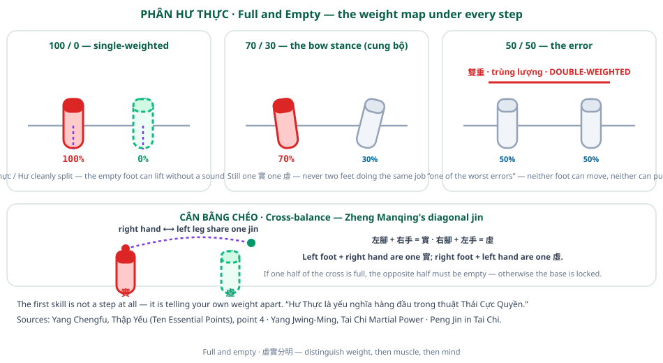

The Root in the Foot
Yang Chengfu’s Ten Essential Points is the shortest complete footwork syllabus in the taiji canon. Ten numbered instructions, no more than a line or two each — and the foot, the leg and the waist appear in at least four of them. This article reads the list as what it is: a specification for a body that can move without losing its base.

Photo: fairlybuoyant, CC BY-SA 2.0, via Wikimedia Commons.


Ten Points, Two Halves
The list divides cleanly in two. The first five points address a single practitioner and that practitioner’s own body; the last five address the relationship between the practitioner and everything else, including an opponent. The Chinese names, as the Vietnamese reader renders them:
- Hư Linh Đảnh Kình — the head-top is light and sensitive
- Hàm Hung Bạt Bối — sink the chest, raise the back
- Tùng Yêu — relax the waist
- Phân Hư Thực — distinguish full from empty
- Trầm Kiên Trụy Trứu — sink the shoulders, drop the elbows
- Dụng Ý Bất Dụng Lực — use intent, not force
- Thượng Hạ Tương Tùy — above and below follow each other
- Nội Ngoại Tương Hợp — inside and outside unite
- Tương Liên Bất Đoạn — link continuously, never break
- Động Trung Cầu Tĩnh — seek stillness within movement
Four of these — 3, 4, 7 and, indirectly, 5 — are about how the lower body is organised. That is the density of footwork instruction you would expect from a list that a martial art has been copying for a century.
Where Force Is Said to Begin
The single most quoted line in the whole taiji literature appears in the commentary to point 7:
“Its root is in the foot, it issues in the thigh, the waist is the master, it shows in the fingers.”
— gốc của nó ở bàn chân, phát ra ở đùi, do yêu làm chủ tể, biểu hiện ở các ngón tay
Read as footwork, the sentence is a chain of custody. The ground is the source. The foot is where that source is tapped. The thigh transmits it. The waist routes it. The hand only announces it. Every link has to be intact; break any one and the hand receives nothing, no matter how strong the arm is.
Point 7 continues with a second, harder instruction: “Từ bàn chân đến chân rồi đến yêu, mọi nơi đều phải luôn được hợp nhất qua một khí” — from the foot to the leg and then to the waist, everything must at all times be unified through one khí. And then the diagnostic: if you step forward or back and fail to gain the advantage, “the body has become scattered — look for the fault in the waist and in the leg.” The failure is not in the arm. It is always below.
The Waist Is the Master
Point 3, tùng yêu (relax the waist), is where the footwork logic is spelled out most plainly:
“Yêu là chủ tể của toàn thân. Có được kỹ năng tùng yêu, thì hai chân mới có lực và hạ bàn mới vững chắc.”
— The waist is the master of the whole body. Only by acquiring the skill of relaxing the waist do the two legs gain power and the lower body become firm. The commentary adds the mechanism: every transformation of full and empty is turned by the waist, which is why the tradition says “the source of intent and command lies in the waist” and “if you cannot issue force, you must look for it in the waist and the legs.”
This is the sentence that reframes footwork. The feet are not the steering; the waist is. A step is the waist’s turn made visible at ground level. The list’s most quoted phrase for the quality of that step is from the Heart Classic: “Bước như mèo đi. Vận kình như kéo tơ.” — step like a cat walking; move the jin like drawing silk.
Top and Bottom Follow Each Other
Point 7’s title, thượng hạ tương tùy (above and below follow each other), is the rule that makes the chain work in motion. Whatever the hand does, the foot has already done; whatever the foot does, the waist has already begun. The commentary ties it back to the ground path explicitly and gives the same diagnostic: fail to gain the advantage, and the fault is in the waist and the leg.
Point 9, tương liên bất đoạn, forbids the break. In the Heart Classic’s formulation the whole body must be khinh linh — light and nimble — in every movement, and above all strung together without interruption. In the Vietnamese gloss, khinh is the lightness of the body and linh is the lightness of the mind. A step that stutters is not a footwork problem; it is a broken chain.
On the Tennis Court
Three transfers are direct.
1. The ground is the source, not the arm. A forehand that relies on the arm has no ground path. The taiji diagnosis — look for the fault in the waist and the leg — is the same diagnosis a coach makes when a player’s power collapses under pressure: the feet stopped working before the arm did.
2. The waist routes; the feet position. When a player is told to “turn the shoulders” and the shot still feels weak, the missing link is usually the waist turn that should have preceded the step. Taiji puts the waist first in the chain, not the shoulders.
3. Never break the chain. A split step, a first step and a plant that arrive as three separate events waste the ground reaction force available at each. Point 9 asks for one continuous strand. On court, that reads as: the split step loads the first step, the first step loads the plant, and the plant is already turning.
Source Book
Yang Chengfu, Thập Yếu (十要, Ten Essential Points of Taijiquan) — Vietnamese bilingual reader with the full commentary of Dương Trừng Phủ and Trần Vi Minh: taichinow.github.io/vi/books/yang_chengfu_ten_essential_points_vi.html
Cross-checked against Yang Jwing-Ming, Thái Cực Quyền Vũ Lực (Tai Chi Martial Power), whose root-and-jin chapter restates the same foot-to-waist-to-hand chain: taichinow.github.io/vi/books/yang_jwing_ming_martial_power_vi.html
All quotations translated from the Vietnamese readers of these editions. Diagrams on this page are original work made for the TFL Footwork Research Project.
TFL Footwork Research Project | Full and Empty - Weight Distribution as the First Footwork Skill →